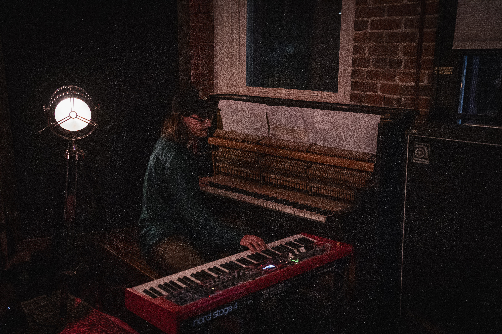

Redding 2025
Arno Kristensen is a Swiss pianist, composer, and interdisciplinary artist whose work explores the nuances of identity within the Armenian diaspora. Born in Geneva in 2000, Kristensen investigates the intersection of heritage and modernity, asking what it means to be a Swiss jazz musician of Armenian origin.
Following his studies at JazzCampus in Basel (FHNW MusikAkademie), Kristensen completed his Master’s degree at the California Institute of the Arts in Los Angeles. Studying with Vardan Ovsepian, he sought to bridge the gap between the foundations of American jazz and the deep traditions of Armenian music.
While primarily a pianist and composer, Kristensen’s artistry is rooted in an interdisciplinary approach. His creative process is nourished by a wide range of influences, including Ghanaian and contemporary dance, world percussion, and visual arts. This diverse background informs his unique ability to weave traditional melodies into contemporary jazz structures, oscillating between cultural memory and modern innovation. Furthermore, he remains committed to a pedagogical mission, sharing his artistic process with the next generation.
His music serves as an invitation for the audience to explore their own origins and find a shared connection through history and sound. Kristensen is currently preparing his debut album, entirely conceived in Switzerland.